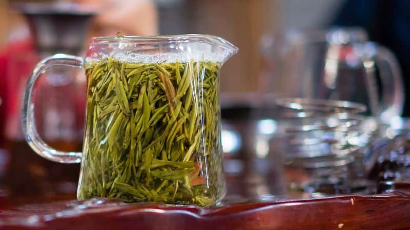

How To Make Green Tea | Lipton
 Skip to contentHome Home
Join the Tea Club Opens in new window Opens in new window Back Our Teas World of Tea Recipes Home Wellbeing Our Purpose SmartLabel App SmartLabel App Opens in new window Close Navigation Opens in new window Hello, what are you looking for? Close Search HOW TOMAKE GREEN TEA
Share this article Share to facebook Opens in new window Share to email Opens in new window Share to twitter Opens in new window Add to favourites Added to favouritesYou will have heard the benefits of green tea (may support a healthy heart, less caffeine than coffee and zero calories when unsweetened), but what about the taste? Learn how to make green tea to be proud of. With these easy steps you can banish bitterness and stay hydrated with Lipton Green Tea.
How to Make Green Tea
Boil the drinking water and allow to cool slightly for 2-3 mins, this slightly cooler water will get the best out of your delicate tea leaves. Pour the water onto the teabag to release its delicious aroma. Leave the teabag to infuse for up to 3 minutes. If you like a stronger taste you can brew a little longer but watch out, over brewing can cause bitterness. Remove the teabag and enjoy your deliciously refreshing Lipton Green Tea!Top tip: allow to cool and add ice to enjoy a DIY Lipton Iced Green Tea on a hot day!
subheading text
Heading Text
( 3 items ) PreloaderDecaffeinated Green Tea
Mandarin Orange Green Tea
Green Tea with Mint
PreloaderDISCOVER A WORLD OF LIPTON
guide toHow to make milk tea the Lipton way
click hereCool down with iced green tea
Recipe
click here how toMake a classic mint tea
click hereExplore our everyday recipes
Floating Lemon-Strawberry Acai Iced Tea
It’s pink. It’s got lemonade. It tastes of strawberries. The kids will love this one. Start this simple recipe with Lipton® Strawberry Acai Iced Green Tea Mix. It’s a winner.
Prep time
mins Discover RecipesGreen Tea Citrus Sangria
Think summer vacations as you drink this cool concoction. Take Lipton® Green Tea with Citrus, add a handful of fruit and some white cranberry juice. Ole!
Prep time
mins Discover RecipesGreen Tea Ice Cream
Our zingy and zesty green tea ice cream is the perfect way to finish off a meal. Take a peek at this mouth-watering recipe. Fab-u-lous.
Prep time
mins Discover Recipes Label Help Center Accessibility Privacy Notice Store Locator Join the Tea Club Unilever PepsiCo Unilever Food Solutions Terms of Service Site Map Want to Serve this Product? AdChoices–Do Not Sell Contact Us en es © 2020 UnileverTea is not a substitute for fruits or vegetables, which provide a wide range of nutrients such as vitamins and minerals.
Please consult your doctor regarding a diet/nutritional plan that is right for you. This web site is directed only to U.S. consumers for products and services of Unilever United States.
This web site is not directed to consumers outside of the U.S.